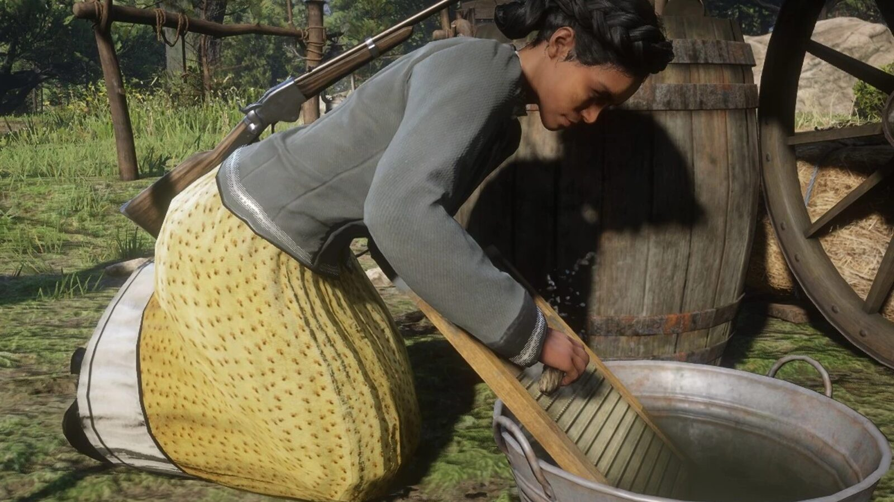
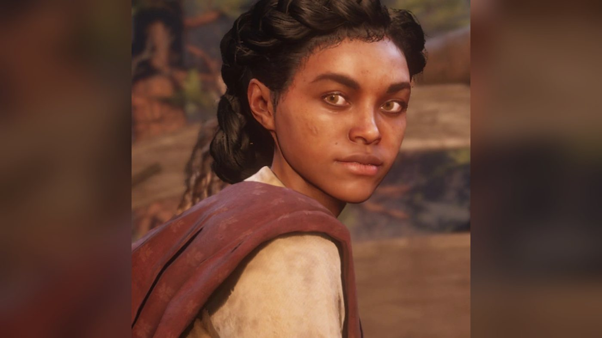
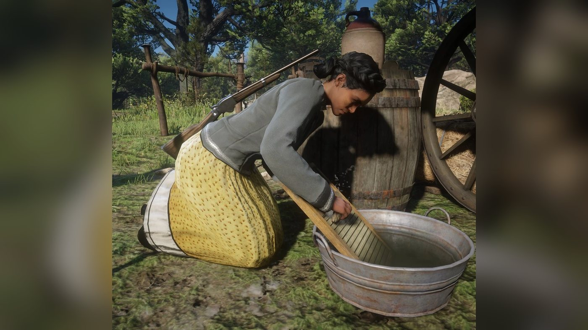
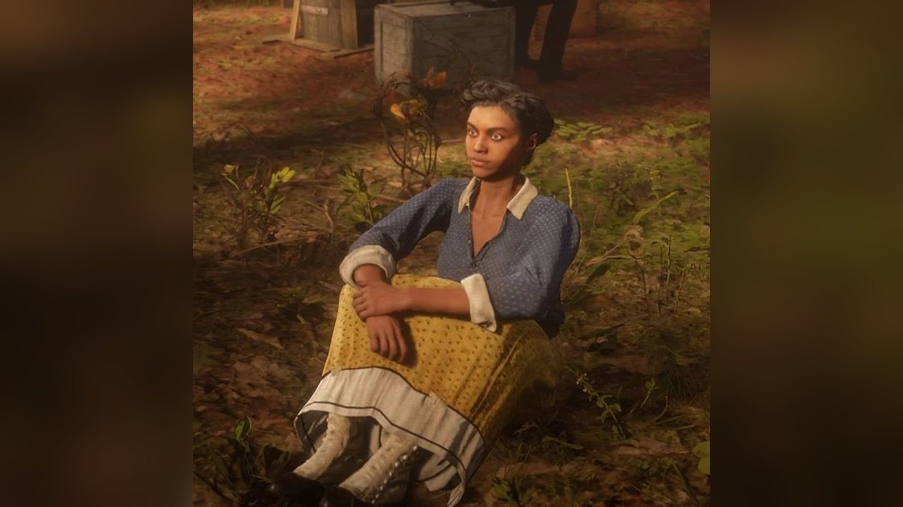
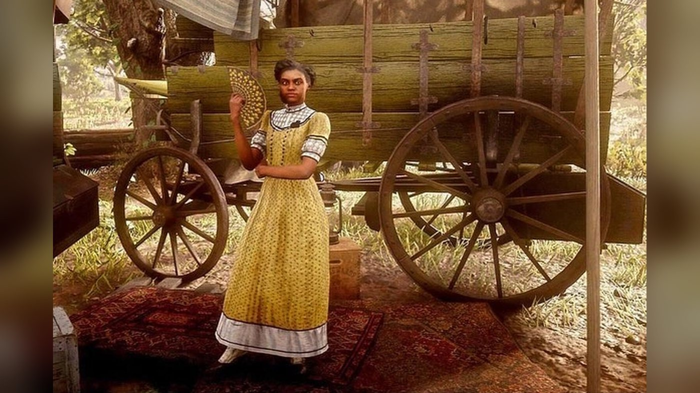
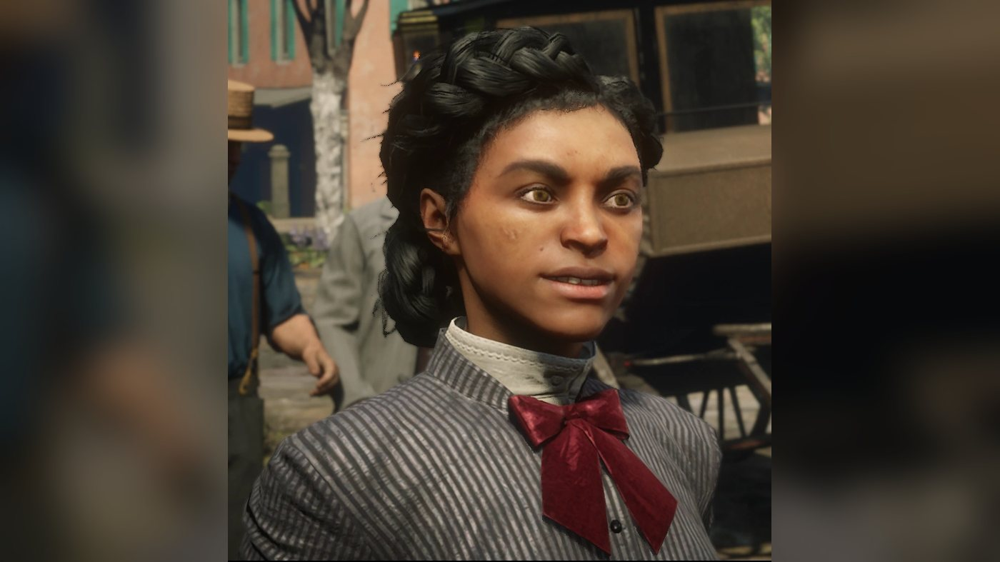
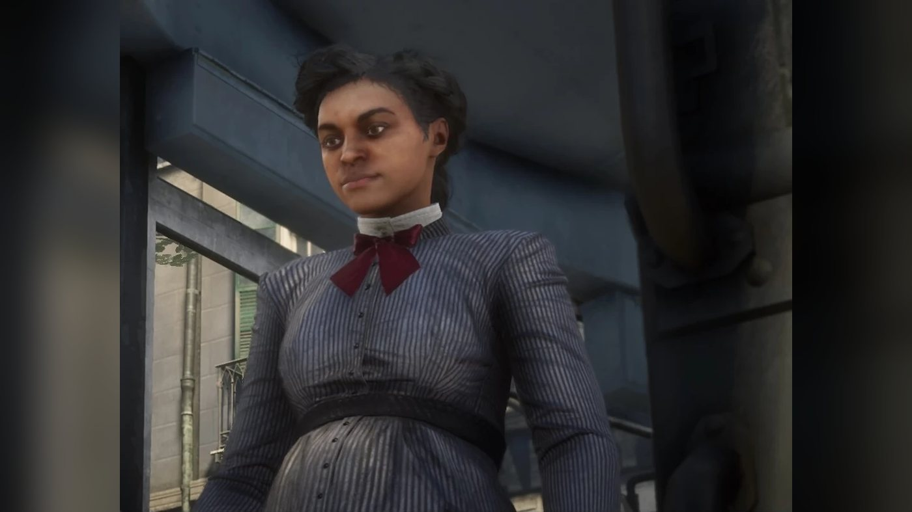
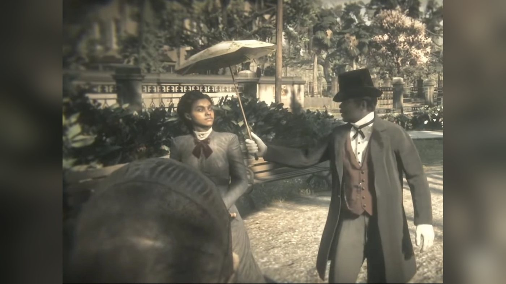

Character · Van der Linde gang
Tilly Jackson
Tilly Jackson is a supporting character of Red Dead Redemption 2 (2018), set in 1899. Taken from her mother at 12 by the Foreman Brothers gang, she ran with them for years before killing one of them and fleeing; Dutch van der Linde took her into his gang. In camp she works under Susan Grimshaw with Karen Jones and Mary-Beth Gaskill. In the fourth chapter the Foremans kidnap her, and Susan and Arthur Morgan rescue her. When Pinkerton agents seize Abigail outside the Beaver Hollow camp, she hides with Jack Marston. By 1907 she is married to a lawyer from Haiti and lives in Saint Denis.
She is played by Meeya Davis, an American actress from Detroit.
- Name
- Tilly Jackson; Tilly Pierre after her marriage
- Born
- Not given in the game
- Status
- Alive in 1907, living in Saint Denis
- Nationality
- American
- Family
- Mother (a former slave, dead before Tilly joined Dutch); husband, Mr. Pierre, a lawyer from Haiti; a daughter
- Affiliation
- Foreman Brothers (former), Van der Linde gang (former)
- Role
- Camp work under Susan Grimshaw
- Games
- Red Dead Redemption 2
- Voiced by
- Meeya Davis
Biography
Origins
The games give no date of birth for Tilly. What is known of her childhood comes mostly from her own account, given at the Clemens Point camp to Karen Jones and Mary-Beth Gaskill. Her mother had been a slave (see Relationships, Arthur Morgan). Tilly was taken from her mother as a child. According to the Red Dead Wiki's summary of this camp scene, the man who took her was Malcolm Foreman, whom the wiki names as a cousin of Anthony Foreman. Rockstar's official guide, as summarized by Wikipedia, says the Foreman Brothers gang took her at twelve. She spent years with them and was badly treated.
Tilly killed Malcolm and left the Foremans. When she tried to return to her mother, she learned that her mother had died. Trouble followed, and Dutch van der Linde found her and took her into his gang. According to the same camp events page, she tells the other women she is grateful to Dutch for raising her and teaching her to read. The Red Dead Wiki lists Malcolm as the only person she is known to have killed. Anthony Foreman, the leader of the Foreman Brothers, never forgave her for leaving; according to the Red Dead Wiki, Tilly says he behaves as if he owns her.
Red Dead Redemption 2 (1899)
Chapter 1: Colter
Tilly is with the gang when it flees Blackwater through the snow in "Outlaws from the West". According to the Red Dead Wiki, she rides in a wagon with Abigail Marston and the dying Davey Callander. At the abandoned mining town of Colter, Dutch brings back Sadie Adler, whose husband has just been killed by the O'Driscolls, and asks Tilly and Karen to warm her up and give her something to drink. In "Enter, Pursued by a Memory", John Marston has not been seen for two days. Tilly sits by the fire with Abigail and Mary-Beth when Arthur comes in, and she tells Abigail that John is strong and smart. Abigail only grants that he is strong. Arthur then goes out with Javier Escuella and finds John.
At the end of the chapter, in "Eastward Bound", the gang comes down from the mountains to Horseshoe Overlook, above Valentine. When Dutch arrives in the new camp, Tilly is sitting at a table with Uncle. Soon after, Susan Grimshaw inspects her work and berates her in crude terms (see Relationships).
Chapter 2: Horseshoe Overlook
In "Polite Society, Valentine Style", Arthur wakes Uncle to take him into Valentine. Karen, Mary-Beth and Tilly, who have spent two weeks in camp, talk Arthur into bringing them along, and Tilly says she can hardly believe they are about to see civilization again. On the road, a stagecoach loses its horses. Tilly asks which of the men will help the driver, and Uncle pleads his lumbago. If Arthur catches the horse, Tilly congratulates him and later tells him she is proud of him. In town, she makes fun of the idea of pretending Valentine is Paris, and she asks whether they should have brought Molly O'Shea. The women split up to look for leads, while Arthur and Uncle go to the general store.
Later, Mary-Beth tells Arthur that Tilly and Karen went to the hotel to rob some drunk men. She then spots Tilly across the street, pinned against a wall by a man she recognizes as one of the Foreman boys. The mission page and the Red Dead Wiki identify him as Anthony Foreman. The man tells Tilly he has been looking for her for a long time and tries to take her away, and she fights back and calls for help. Arthur can either threaten to cut the man's throat or tell him more calmly to let her go. The man backs off, warning Tilly that she is making a big mistake. Arthur sends her across the street to Uncle and Mary-Beth. If Arthur asks what that was all about, she answers that the man is someone she used to know.
Arthur then frees Karen from a violent client at the Saints Hotel, and Tilly asks Karen whether she is all right. A rider claims to have seen Arthur in Blackwater. Arthur tells Uncle to take the women home and goes after the man, and Tilly tells him to be careful. Back at camp, Arthur can ask Tilly about the man who harassed her. In "Who is Not Without Sin", if Arthur greets her while carrying a drunk Reverend Swanson through camp, she asks whether he is all right.
Chapter 3: Clemens Point
The gang moves to Clemens Point, on Flat Iron Lake in Lemoyne. Tilly is uneasy about being in the South and tells Arthur so (see Relationships). In a companion activity, Bill Williamson plans to stop a Boles Overland banking coach west of Dewberry Creek and wants a woman to distract the guards, so Arthur asks Tilly to come. She and Bill argue on the ride. At the ambush point, one of Bill's remarks offends her. Bill opens fire on the guards, and the shooting sends Tilly riding off. Arthur and Bill chase the coach and rob it themselves. The take is 307.50 dollars, of which Arthur's share is 82.50 dollars. Tilly is also the only gang member Arthur can play dominoes against at this camp (see Camp work and activities).
Her Red Dead Wiki page lists her in "The Battle of Shady Belle", although the mission page does not name her. In that mission, Andrew Milton's offer to the gang at Clemens Point is refused, and the gang moves to the Shady Belle plantation house, near Saint Denis, once Arthur and John have cleared it of Lemoyne Raiders.
Chapter 4: Saint Denis
At Shady Belle, Tilly warns Susan that the new camp lies close to a Foreman safe house (see Relationships). In "No, No and Thrice, No", Arthur is sharing a smoke with Mary-Beth when Susan announces that the Foreman Brothers have taken Tilly to Radley's House. This homestead in Scarlett Meadows, near Rhodes Station, is an occasional safe house for the Foremans. Susan arms herself, and Arthur drives her there in a wagon. On the way, her remarks depend on the order of play: before Jack Marston's return, she notes that first Jack and now Tilly have been kidnapped; after it, she says that Kieran Duffy has not been seen for a while. At the house, Susan kills the lone guard outside with a knife.
Arthur goes in, catches two Foremans by surprise and finds Tilly tied to a chair in one of the bedrooms. Once freed, she thanks them and explains that Anthony Foreman and his men took her, and that some of them have gone hunting. Through the back door, Arthur sees Anthony and two riders fleeing. Tilly asks for Anthony to be brought back alive so that she can face him. Arthur and Susan give chase on horseback and kill the two riders, and Arthur ropes Anthony and carries him back to the house, hogtied. There, Tilly and Susan confront him and tell him to leave Tilly alone; according to the Red Dead Wiki, Tilly also tells him that his cousin deserved to die. Anthony promises to do so once Arthur threatens his life.
Susan tells Arthur that the decision is his, then takes Tilly back to camp. According to the Red Dead Wiki's pages on the characters, Susan would rather see Anthony killed, while Tilly prefers that he be spared. If Arthur kills him, he stabs him with his knife. If Arthur spares him, he unties his hands and lets him go; in that case Anthony appears again in 1907 (see Epilogue).
Chapter 5: Guarma
After the failed robbery of the Saint Denis bank, Dutch, Arthur, Micah Bell, Bill and Javier are stranded on the island of Guarma, and John is arrested. Tilly stays with the rest of the gang. According to the French Red Dead Wiki, she helps Sadie, who leads the group in Dutch's absence, move the camp to Lakay, an abandoned village in the bayou. The Red Dead Wiki also lists her in "Fleeting Joy", in which the survivors of Guarma rejoin the gang at Lakay and the Pinkertons attack the camp, and in "That's Murfree Country", which takes the gang to Beaver Hollow, a cave in Roanoke Ridge. The second mission ends with Susan shooting Molly O'Shea, who has just claimed to have informed on the gang (see Relationships for Tilly's reaction).
Chapter 6: Beaver Hollow
At the end of "Goodbye, Dear Friend", in which Colm O'Driscoll is hanged in Saint Denis, Arthur returns to Beaver Hollow and Tilly hands him a letter from Mary Linton (see Relationships for her remark). After Arthur throws Leopold Strauss out of the gang in "Money Lending and Other Sins VII", Tilly asks him a question about her own place in the gang (see Relationships, Bill Williamson).
In "Our Best Selves", most of the men rob an army payroll train, and John is shot and falls from it. Meanwhile, Milton's men grab Abigail outside camp, where she is with Tilly and Jack. Tilly hides with the boy. At the start of "Red Dead Redemption", she and Jack meet the gang on the road back from the train. She tells them that she saved Jack and hid with him, but that Milton and his men have taken Abigail to Van Horn, to be put on a boat and tried for murder. Micah argues for leaving Abigail behind, and Dutch agrees and rides back to camp with most of the others. Sadie stays with Arthur and offers to go after Abigail with him.
Before leaving, Arthur gives Tilly a sack of money and tells her to take Jack to Copperhead Landing and wait there for Abigail and Sadie. With low honor he tells her to get away and go live her life; with high honor he tells her she is a good girl and should live a good life. Tilly starts to say that she will miss him. A low-honor Arthur cuts her short, while a high-honor Arthur answers that he will miss her too. He says goodbye to Jack and rides to Van Horn with Sadie. They free Abigail, who shoots Milton dead, and Sadie takes her to Copperhead Landing, where Tilly is waiting with Jack. According to the Red Dead Wiki, John, who survives his fall from the train and escapes Beaver Hollow with Arthur's help, joins them there. This is Tilly's last appearance in 1899.
Epilogue (1907)
Epilogue II: Beecher's Hope
After the gang breaks up, Tilly settles in Saint Denis and marries a lawyer from Haiti, known in the game only as Mr. Pierre. In 1907, once John has moved his family to the Beecher's Hope ranch, he can run into her in Saint Denis; the Red Dead Wiki places her on a bench by the park, next to the tailor's shop. She is pregnant at the time. The two catch up while she waits for her trolley. John tells her about the ranch and says he still sees Uncle, Charles Smith and Sadie. The Red Dead Wiki's page on her husband says she describes him as a fine man. Before boarding the trolley, she promises to write.
After this meeting, and once "A Quick Favor for an Old Friend" is completed, her letter to John and Abigail can be read on the dining table at Beecher's Hope. She writes under her married name (see Names) and announces that she has given birth to a daughter. She describes a fancy house in town, with servants, and says she feels out of place in this genteel life; she reports her husband's answer to that feeling (see Quotes). She hopes Jack is well, writes that being an aunt to him made her want a child of her own, and tells Abigail she was right about motherhood. She misses the old days: she names Susan, Pearson, Hosea, whom she compares to a father, Arthur and Karen, whom she calls a sister. She has had no news of Karen and believes drink killed her. She still sees Mary-Beth, now a novelist, and calls the Marstons the only real family she has besides her husband and daughter.
In the ending credits that follow "American Venom", a trolley crosses Saint Denis, then Tilly is seen walking in a city park, pushing her baby in a pram while her husband holds a parasol over them. According to the Red Dead Wiki, if Arthur spared Anthony Foreman in 1899, a Saint Denis bounty of 85 dollars is posted on him in 1907, and John can capture him at Doyle's Tavern after "Gainful Employment". On the way to the jail, John says he is a friend of Tilly's, and Foreman answers that he has kept his word and left her alone since her rescue.
Personality
Rockstar's character description, published on September 6, 2018, reads: "An outlaw from the age of 12, Tilly ran with another gang before joining up with Dutch. Savvy, resilient and dependable, she can more than handle herself and isn't afraid to speak her mind." A character page from an official guide, reproduced on the Red Dead Wiki, gives more detail: "An outlaw for almost as long as she can remember, Tilly ran with another gang who kidnapped her from her mother when she was just twelve years old. After years of abuse, she killed one of the gang members and fled." The same page says she "was getting into trouble and heading down a bad path" when Dutch found her, and that he brought her in, protected her and taught her to read.
In camp she does her share of the chores under Susan Grimshaw and says what she thinks, to Susan, to Karen and to Arthur (see Relationships). By the fire, according to the Red Dead Wiki's camp events page, she admits that the other girls sometimes tire her: in her view they always want more, whereas she grew up with less and asks for nothing beyond friends, regular meals and not living in fear. Talking with Karen and Mary-Beth, she holds that misery is a choice and is confident that her own situation, and that of women in general, will improve. Her reaction to Molly O'Shea's death is harsher than that of Karen and Mary-Beth (see Relationships).
In her own words
The Red Dead Wiki opens its page on her with a line from her camp dialogue: "Most of us grew up hungry and scared and alone, one way or another." Setting off for Valentine in "Polite Society, Valentine Style", she says: "I can't believe we're going to see civilization... feels like weeks since we did." In the same mission, when a man from her old gang pins her against a wall, she shouts: "You can go kiss a damn snake for all I care... get off me! Get off of me!"
Names
Her name is Tilly Jackson. In her 1907 letter to John and Abigail she introduces herself as "Tilly Jackson as I was and Tilly Pierre as I now am", having married a man named Pierre; she signs the letter "Yours, Tilly". Dutch and Arthur address her as Miss Tilly, the nickname the French Red Dead Wiki also lists; Susan Grimshaw calls her Miss Jackson when she inspects her work (see Relationships), and Arthur uses the same form in one of his antagonize lines.
Appearance
The guide's portrait shows a young Black woman with brown eyes and dark hair braided and pinned up, in a gray jacket with a red neckerchief tied at the front, a white lace blouse and a printed yellow dress. According to the Red Dead Wiki, she wears several outfits over the chapters, from a poncho and a shawl over her head in the snows of Colter to a white blouse and red skirt at Clemens Point. In 1907 she is pregnant and wears a dark blue striped dress with a red bow tie.
Relationships

Susan Grimshaw
Susan is hard on Tilly in the early chapters. As the gang settles at Horseshoe Overlook in "Eastward Bound", she inspects Tilly's work and tells her: "Miss Jackson... I've seen shit with more common sense than you. Do it properly." In another scene she grabs Tilly by the ear; when Tilly says she does not feel well, Susan answers "I don't care what you feel, girl. Get ready!" and sends her off. With Arthur listening, she likens the girls to fairy-tale princesses; Arthur's reply is that they must have found their fairy godmother. Over dominoes at Clemens Point, Tilly jokes with Arthur about killing Miss Grimshaw; according to the Red Dead Wiki, Arthur answers that the gang has killed someone in camp only once, and only because that person was a traitor.
At Shady Belle, Tilly warns Susan that the new camp lies close to a Foreman brothers' safe house. When Tilly is taken, Susan leads the rescue with Arthur (see Biography); according to the Red Dead Wiki, she calls Tilly her girl during the mission. At Beaver Hollow, according to the wiki, Susan reassures Tilly about the gang's situation and tells her she has grown into a fine young woman. Susan is the first person Tilly names among those she misses in her 1907 letter (see Quotes).

Karen Jones
Tilly, Karen and Mary-Beth share the camp chores and Susan's scolding, and ride together to Valentine (see Biography). According to the Red Dead Wiki's camp events page, Tilly predicts during chores that men will one day share the work, an idea Karen finds laughable. When the three talk about their lot, Karen says they were born poor into a world of men and can only make the best of it, while Tilly answers that things will get better. At Clemens Point Tilly tells Karen she robbed a man but spared a woman who needed the money for her son, lost in the Civil War; Karen thinks Tilly has gone soft, since the son fought for the wrong side, and Tilly replies that mother and son did not start the war. Karen and Tilly also drink together at the party for Sean's return.
After Sean's death, Karen's drinking worsens. At Shady Belle, according to the wiki, Karen complains about the swamp while the two sew, and Tilly answers that it beats freezing to death; inside the manor, Tilly notices that something is wrong and comforts her. Tilly later tells Arthur she is worried about Karen's drinking; Arthur says he will talk to her, and Tilly says she will try too, without much hope. In 1907 Tilly has had no news of Karen; what her letter says about her is in the Biography and Quotes. The game never confirms what became of Karen.

Mary-Beth Gaskill
At Horseshoe Overlook Tilly asks Mary-Beth about the book in her hands. It is a romance, and Mary-Beth, expecting to be teased, says she knows Tilly and Karen laugh at such books. Tilly admits it, then points out that the two of them read the same books anyway. Mary-Beth offers to lend her the novel, on condition that Karen does not find out. Another day Mary-Beth wonders aloud what happens on the Moon, and is annoyed that Tilly does not share her dreams. Tilly is also the one Mary-Beth confides in after Molly's death (see Molly O'Shea). Tilly's 1907 letter says she still sees Mary-Beth, now a novelist (see Biography).

Arthur Morgan
Arthur drives off the Foreman man who grabs Tilly in Valentine, takes her on Bill's coach job and rescues her with Susan in "No, No and Thrice, No" (see Biography). She helps Susan nurse him after his captivity at Colm O'Driscoll's camp. At Clemens Point she asks him why the gang has come so far south; Arthur answers that it is as good a place as any to be chased by the law, and Tilly reminds him that, as a Black woman, she is less welcome in Lemoyne. Arthur promises to keep her safe, and she tells him that her own mother was a slave until the age of 15. When Tilly tells Karen and Mary-Beth about her past, Arthur can add, according to the wiki, that everyone in the gang loved her as a child: the sweetest little thing, and the saddest.
According to the Red Dead Wiki, Arthur can tell her, as he can tell Karen and Mary-Beth, that he is unsure of his place in life and wonders why he does what he does. Among his antagonize lines, the wiki's quote list gives: "Ooooh, little Miss Tilly... So high and mighty... And so annoying." In the final mission he gives her money and sends her away with Jack (see Biography). He is among the people she misses in her 1907 letter (see Quotes).

Jack Marston
According to the Red Dead Wiki, Tilly keeps Jack warm in the snows of Colter and is often near him in camp when he is away from his mother. When Milton's men seize Abigail outside the Beaver Hollow camp, Tilly hides with Jack, then waits with him at Copperhead Landing (see Biography). In 1907 she writes that looking after him is what made her want a child of her own (see Biography).

Abigail Marston
At Colter, while John is missing, Tilly tries to reassure Abigail (see Biography and Quotes). At Horseshoe Overlook Tilly admits she is bored, and Abigail tells her to be glad of it, because things will only get worse. Abigail is seized by Milton's men while she is with Tilly and Jack (see Biography). In her 1907 letter, now a mother herself, Tilly tells Abigail she was right about motherhood (see Quotes).

John Marston
Tilly is in camp at Colter while John recovers from the wolf attack. Her 1907 meeting with him in Saint Denis, and the letter she then sends to him and Abigail at Beecher's Hope, are told in the Biography; the letter's closing lines, about the Marstons as her family, are in Quotes.

Dutch van der Linde
Dutch takes Tilly into the gang after she flees the Foreman brothers, and she credits him with raising her and teaching her to read (see Biography). At Colter he asks her and Karen to look after Sadie (see Biography). In "Red Dead Redemption", when Tilly tells the returning gang that Milton has taken Abigail, Dutch refuses to go after her (see Biography).

Hosea Matthews
In her 1907 letter, Tilly names Hosea among the people she misses and compares him to a father (see Quotes).

Molly O'Shea
At Horseshoe Overlook Tilly asks Molly to help with the work. Molly excuses herself on the grounds that she is in love, and Tilly's answer is to pitch in or get out of the way. On the way to Valentine in "Polite Society, Valentine Style", Tilly asks: "You think we should've asked Molly to come with us?" Karen answers that Miss O'Shea is too high and mighty now. After Susan shoots Molly at Beaver Hollow, Mary-Beth tells Tilly she cannot get over it; according to the Red Dead Wiki, Tilly shows little sympathy and says Molly was a fool in love who would say anything.

Javier Escuella
According to the wiki's camp events page, during the party for Sean's return Javier sits by Tilly at the women's tents and sings "El Coyotito" for her on his guitar. One of Arthur's antagonize lines to Tilly, in the wiki's quote list, begins: "I hope you're charging Javier with all the attention he's getting..."

Bill Williamson
In chapter 3 Bill and Tilly bicker through his robbery of a Boles Overland coach, until she rides off (see Biography). According to the mission page of "Money Lending and Other Sins VII", after Arthur sends Strauss away at Beaver Hollow, Bill and Tilly both ask Arthur whether they will be thrown out too; Arthur reassures Tilly but not Bill.

Sadie Adler
On the night Sadie is brought to Colter in "Outlaws from the West", Dutch asks Tilly and Karen to warm her up (see Quotes). At the end of the gang, Sadie brings Abigail back to Copperhead Landing, where Tilly waits with Jack (see Biography).

Kieran Duffy
At Horseshoe Overlook, while Kieran is tied up, he begs Tilly for water. She lets him drink and tells him that is his lot. He then wants a blanket and dry boots as well, and Tilly mockingly offers to add a bottle of champagne. After his death, according to the Red Dead Wiki, she says she thinks he was always living on borrowed time.

Lenny Summers
At Clemens Point Lenny and Tilly each tell Arthur, separately, how uncomfortable they feel in the South because of their background, and Arthur reassures them both (see Arthur Morgan).

Uncle
When the gang reaches Horseshoe Overlook, Tilly is sitting at a table with Uncle, who gets up, bottle in hand, as Dutch arrives. On the road to Valentine her question about who will help a stranded driver draws his lumbago excuse (see Biography).

Orville Swanson
When Arthur brings a drunk Swanson back to camp in "Who is Not Without Sin", Tilly can ask: "Is he alright?" (optional line, if Arthur greets her). At Shady Belle, according to the wiki, Swanson shouts from the gazebo about a young woman's ghost he has seen in the swamp, and Tilly's verdict is that he is losing his mind.

Simon Pearson
Pearson is among the people Tilly misses in her 1907 letter (see Quotes).

Mary Linton
At the end of "Goodbye, Dear Friend", Tilly hands Arthur a letter from Mary Linton (see Biography). According to the Red Dead Wiki's page on Mary, she tells him Mary is not worth it; she is one of the camp women, with Susan and Mary-Beth, who think Mary is no good for Arthur.
Anthony Foreman
Anthony Foreman leads the Foreman brothers, the gang Tilly ran with as a girl; according to the Red Dead Wiki, she killed his cousin Malcolm before fleeing (see Biography). He is the man who grabs her in Valentine, and his men kidnap her in "No, No and Thrice, No" (see Biography).
Mr. Pierre
Tilly's husband, a lawyer from Haiti, appears with her and their child in the end credits (see Biography). What she writes about him in her 1907 letter is in Quotes.
Camp work and activities
Wikipedia's list of the game's characters describes her as one of the gang's handmaidens. Her camp chores under Susan Grimshaw include sewing alongside Karen and Mary-Beth.
At Clemens Point she is the only gang member Arthur can play dominoes against. During these games she can ask him for a necklace, which can be found in homesteads or on dead enemies (see Missions); according to the wiki, she gives Arthur a medicine in return. The Red Dead Wiki's infobox lists a Carbine Repeater as her weapon, although the same page describes her carrying one on her back in camp as a glitch. Her part as the decoy in Bill's coach robbery is told in the Biography.
Missions
The English Red Dead Wiki lists ten story missions of Red Dead Redemption 2 for Tilly, the ending credits, her 1907 meeting with John and two companion activities. The table below also includes the missions in which she appears without being listed, or in which she is only talked about.
Red Dead Redemption 2, story missions
| Mission | Chapter | Tilly's role |
|---|---|---|
| Outlaws from the West | 1. Colter | Flees Blackwater with the gang. At Colter, Dutch asks her and Karen to warm up Sadie. |
| Enter, Pursued by a Memory | 1. Colter | By the fire, she reassures Abigail about the missing John. |
| Eastward Bound | 1. Colter | At a table with Uncle when Dutch reaches Horseshoe Overlook; Susan criticizes her work. |
| Polite Society, Valentine Style | 2. Horseshoe Overlook | Rides to Valentine with Arthur, Uncle, Karen and Mary-Beth. A man from the Foreman Brothers, Anthony Foreman according to the wiki, grabs her in the street until Arthur steps in. |
| Who is Not Without Sin | 2. Horseshoe Overlook | Not listed by the wiki. At camp, if Arthur greets her while carrying a drunk Reverend Swanson, she asks whether he is all right. |
| The Battle of Shady Belle | 3. Clemens Point | Listed by the wiki; not named in the mission page. In this mission Milton and Ross come to the Clemens Point camp, and the gang moves to Shady Belle. |
| No, No and Thrice, No | 4. Saint Denis | Kidnapped by the Foreman Brothers and held at Radley's House, Scarlett Meadows. Freed by Arthur and Susan, she asks for Anthony Foreman to be brought back alive. The mission fails if she is killed. |
| Fleeting Joy | 5. Guarma | Listed by the wiki; not named in the mission page. In this mission the survivors of Guarma return to the Lakay camp and the Pinkertons attack. |
| That's Murfree Country | 5. Guarma | Listed by the wiki. In this mission the gang moves to Beaver Hollow, where Susan shoots Molly O'Shea. |
| Goodbye, Dear Friend | 6. Beaver Hollow | At the end of the mission, back at Beaver Hollow, she hands Arthur a letter from Mary Linton. |
| Money Lending and Other Sins VII | 6. Beaver Hollow | Not listed by the wiki. After Strauss is thrown out, she asks Arthur whether she will be next. |
| Our Best Selves | 6. Beaver Hollow | Off screen, not listed by the wiki. Milton's men grab Abigail outside camp while she is with Tilly and Jack; Tilly hides with the boy. |
| Red Dead Redemption | 6. Beaver Hollow | Meets the gang on the road and reports Abigail's capture. Arthur gives her money and sends her with Jack to Copperhead Landing. |
Red Dead Redemption 2: companion activities, camp request and epilogue
| Activity | Chapter | Tilly's role |
|---|---|---|
| Coach Robbery (Bill Williamson) | 3. Clemens Point | Brought along by Arthur as a distraction for Bill's robbery of a Boles Overland banking coach. She argues with Bill and rides off when he opens fire. Available after "Friends in Very Low Places" and until "Blessed are the Peacemakers". |
| Dominoes | 3. Clemens Point | Activity giver. She is the only gang member Arthur can play against in chapter 3. |
| Item request | 3. Clemens Point | While playing dominoes, she asks Arthur for a necklace. Chapter 3 only; it counts toward the Errand Boy trophy. |
| Meeting in Saint Denis | Epilogue II | John can meet her, pregnant, at a trolley stop in Saint Denis. Not a numbered mission. |
| Letter from Tilly | Epilogue II | Her letter to John and Abigail, readable at Beecher's Hope after the meeting and "A Quick Favor for an Old Friend". |
| Bounty: Anthony Foreman | Epilogue II | Mentioned, if Arthur spared Foreman. John tells him he is a friend of Tilly's (Red Dead Wiki). |
| Ending Credits | Epilogue II | Seen in a Saint Denis park with her husband and their baby. |
Notable people Tilly kills
The Red Dead Wiki credits Tilly with a single killing, which takes place before the game and is known only from her own account.
| Name | Mission | Circumstances |
|---|---|---|
| Malcolm Foreman | Before 1899 (told at the Clemens Point camp) | Anthony Foreman's cousin, who had taken her from her mother, according to the Red Dead Wiki's summary of her camp account. She kills him and leaves the Foreman Brothers. |
Quotes
The lines below are given as spoken or written in the game, in the original English, with the mission and, where relevant, the person addressed.
At Colter
He's strong and he's smart.
Enter, Pursued by a Memory (RDR2, chapter 1), to Abigail, about John. Abigail answers: "Strong at least."
The trip to Valentine
Is one of you gonna get that feller's horse?
Polite Society, Valentine Style (RDR2, chapter 2), when a stagecoach loses its horses. Uncle replies: "Oh, I got lumbago, it's very serious!"Well, Arthur, I'm proud of you.
Polite Society, Valentine Style (RDR2, chapter 2), if Arthur has helped the driverI imagine Valentine and Paris are easily confused.
Polite Society, Valentine Style (RDR2, chapter 2), after Karen tells the women to imagine they are in ParisJust someone I used to know.
Polite Society, Valentine Style (RDR2, chapter 2), when Arthur asks what that was all aboutBe careful, Arthur.
Polite Society, Valentine Style (RDR2, chapter 2), as Arthur leaves to chase the man who recognized him from Blackwater. Arthur answers: "Just a word."
The gang's last days
They came and took Abigail. I saved Jack... we hid, but they took Abigail.
Red Dead Redemption (RDR2, chapter 6), to the gang on the road back from the trainAgent Milton and his men... took her to Van Horn... to be put on a boat and tried for murder.
Red Dead Redemption (RDR2, chapter 6), when Arthur asks who took AbigailAlright, Arthur. I'll... I'll miss...
Red Dead Redemption (RDR2, chapter 6), after Arthur gives her money. With high honor Arthur answers: "Me too, sweetheart... me too..."; with low honor: "No… no don't start with all that."
Said to her
Miss Tilly, Miss Karen, would you warm her up...give her a drink of something.
Dutch van der Linde, Outlaws from the West (RDR2, chapter 1), on bringing Sadie Adler into the Colter campGet your goddamn hands off of her.
Arthur Morgan to the Foreman man, Polite Society, Valentine Style (RDR2, chapter 2), if he chooses to intervene. Asked who he is, Tilly answers: "A friend of mine..."You're a good girl... you live a good life now, you hear?
Arthur Morgan, Red Dead Redemption (RDR2, chapter 6), with high honor, after sending her to Copperhead Landing with Jack. With low honor: "Just get out of here and go live your life… this is done."
Her letter, 1907
I miss him and I think it was that time I spent being an aunt to him that made me want to be a mother myself. You were quite right, Abigail, it is the greatest feeling alive.
Letter from Tilly (RDR2, epilogue), about JackSilly old Miss Grimshaw and angry Mr. Pearson, and kindly Hosea, who was like a father to me, and you both and poor dear Arthur and all them bastards, and Karen who was a sister to me, and who I miss every day. I never heard what happened to her but, deep down I know the drink did for her.
Letter from Tilly (RDR2, epilogue), on the people she misses from the old daysI feel like the biggest fraud alive, but my husband, who is a very understanding man, tells me everyone is a fraud and we are all the same underneath, and I know he speaks the truth.
Letter from Tilly (RDR2, epilogue)I just wanted to share my happy news with you for you are my family, only one I really got, aside from my husband and baby girl.
Letter from Tilly (RDR2, epilogue), closing lines
Development and performance
Casting
Tilly is played by Meeya Davis, credited in Wikipedia's list of the game's characters as Meeya Davis-Glover. According to the Red Dead Wiki, she was born in Detroit on June 21, 1987, and has appeared in the series High Maintenance and Crashing. Fuzzable, which interviewed her on March 20, 2019, writes that she grew up in Detroit and moved to New Jersey in 2012 to study acting in college, and that she provided both the voice and the motion capture for Tilly. She told the site she had gone in for "a commercial audition", with no background on the character; she realized motion capture was involved when she learned the project was Rockstar's, but only discovered who Tilly was on her actual shooting days. She had just become engaged when she started on the game and later became pregnant with her son during production. She also said she had gone to high school with Harron Atkins, the actor who plays Lenny Summers, who is also from Detroit.
Asked by Fuzzable why characters like Tilly matter, Davis spoke of "giving a voice to black gamers" and called it "such an important message to have strong women standing up for themselves". She described Tilly as a camp girl who had been badly treated by the Foreman Brothers and separated from her mother, and as "super sweet and super strong".
Key scenes
In GamesRadar's interview with the actresses of the gang, published on March 7, 2019, Davis said the campfire scene in which Tilly tells how she killed Anthony Foreman's cousin made her emotional on set: "at a young age she went through so much." She was seven or eight months pregnant when she shot Tilly's pregnant scene in the epilogue. She asked the writers whether they had written it because of her pregnancy, and they said they had not; she called it "art imitating life" and said she was glad Tilly got "that joyful ending". In the same article Kaili Vernoff, who plays Susan Grimshaw, said the mission to rescue Tilly shows that Susan "will go to any lengths to protect these girls", and that she enjoyed watching Susan become loving with Tilly.
Cut content
According to the Red Dead Wiki, the game files contain unused leg models for Tilly, as for many other female characters, made for a camera angle the final game never allows. The wiki's gallery of cut content also includes a sheet of concept art showing Tilly with Bill, Karen, Uncle, Mary-Beth, Strauss and Pearson.
Reception
Rankings
In Game Informer's staff ranking of the 24 members of the Van der Linde gang, published on December 27, 2018, Tilly comes 9th. The staff wrote that her "sometimes supportive, sometimes raw conversations with Arthur about the cruelty of hunting animals and hurting people are among the best bits of writing in the game", and called John's meeting with her in the epilogue, happily married with a child, "another one of Red Dead Redemption II's rare happy moments". TheGamer placed her 7th of 9 in a ranking of the gang's women and children by skill, published on August 2, 2020.
Race and the South
In an article for Kotaku on August 5, 2020, arguing that the game's depiction of Jim Crow racism is inconsistent, freelance writer Isaac Monterose cites Tilly's camp conversation with Arthur about Lemoyne as an example of Arthur's "obliviousness about race". He notes that Arthur first answers that the state "seems as good a place as any to get chased by the law", and that Tilly then has to point out to him that she is Black, before he understands and promises to keep her safe.
Other media and legacy
Marketing
On September 6, 2018, Rockstar posted Tilly Jackson's portrait and character description on Twitter, in a series covering the members of the gang, and The Hollywood Reporter reproduced the series the next day. In the composite of 23 gang members' official art designs that illustrates Wikipedia's list of the game's characters, she stands in the front row, between Sean MacGuire and Susan Grimshaw.
Red Dead Online
The Red Dead Wiki lists Tilly in Red Dead Redemption 2 only. Anthony Foreman, the outlaw who hunts her in 1899, returns in Red Dead Online as a stranger who offers jobs to the player at Radley's House or Doyle's Tavern in Saint Denis, and later as part of the Blood Money update.
Trivia
- In a camp conversation during chapter 2, Tilly can tell Arthur about an illegal O'Driscoll business run from the back room of the Valentine Doctor's Office, which Arthur can then rob. According to the wiki's page on the building, the player can also learn about it by looking through a back window, by watching lawmen take a bribe at the back door, or by knocking on one of its locked doors.
- According to the wiki's list of camp events, Tilly, Mary-Beth and Susan are unavailable in camp once "No, No and Thrice, No" is unlocked. Tilly misses the party for Jack's return at Shady Belle; if she has already been rescued, she is asleep inside the house.
- The mission page of "Horsemen, Apocalypses" notes that Tilly, along with Micah, Lenny, Bill, Javier, Trelawny and Uncle, does not appear during the O'Driscoll attack on Shady Belle, and that the game never explains their absence.
- Tilly's letter is missable content. The wiki warns that it disappears if the player saves and reloads before reading it, and it cannot be kept among the player's documents.
Gallery






